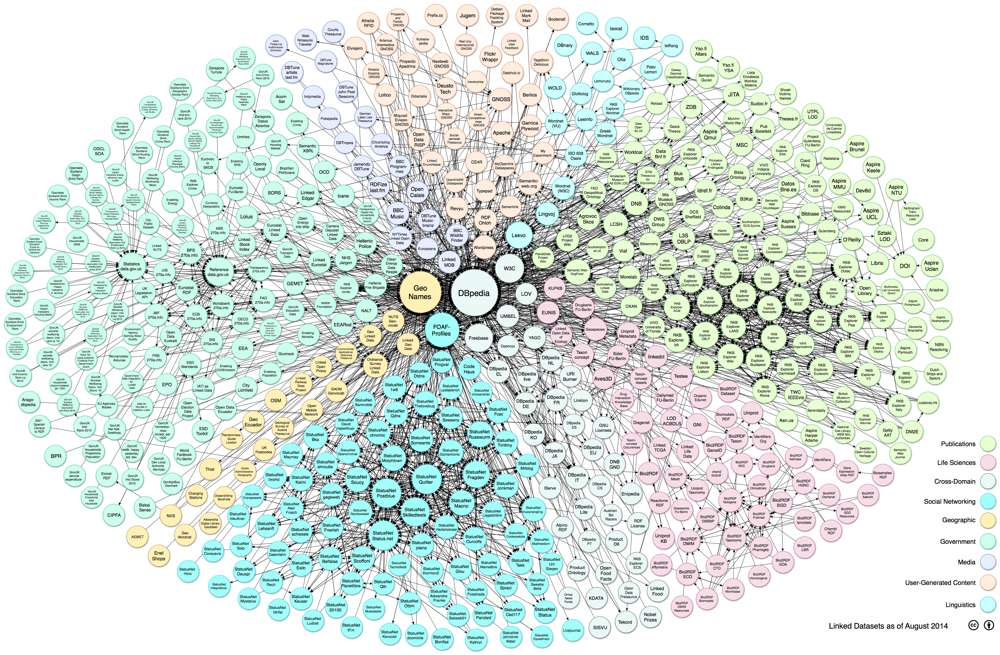

In chapter 3 (section 3.8.1) we looked at the Linking Open Data cloud diagram that represents connections between the Linked Open Data datasets. This is constructed by hand but there are also tools that can visualize connections between datasets.

Figure 31: The Linking Open Data cloud diagram [15].
Gephi is a platform for visualizing networks, graphs and hierarchies [16]. Gephi can be used to visualize the Linking Open Data cloud. As in the hand-crafted representation, dbpedia.org is the largest node in the network densely connected to other datasets. Colour as well as size is used to represent properties of the dataset. Link length is also used to encode information about the data structure.
Figure 32: Linking Open Data cloud generated using the Gephi platform [16].
Protoviz [17] can also be used to automatically visualize the Linking Open Data cloud. The colour of the node reflects the CKAN rating for the dataset (see section 3.8.1 of chapter 3 for a description of CKAN). The intensity of the colour reflects the number of ratings. The proximity of nodes reflects the level of interconnection between the datasets. Outlying nodes in the graph could indicate broken links to other datasets or a genuine lack of semantic relatedness to other datasets [18]. Clicking on a node takes the user to the CKAN page for that dataset.
Figure 33: Linked Open Data Graph by Protovis [17].